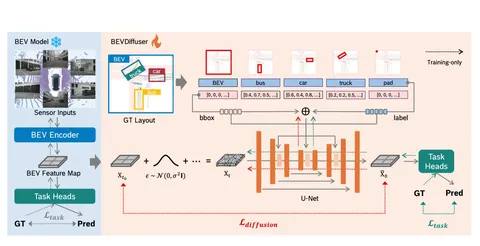

Денойзинг-диффузионки итеративно превращают нормальный шум в изображения. Но есть проблема: результат такой генерации непредсказуем. Чтобы победить это, процесс расшумления можно представить в виде нейросети, обучив её на узкоспециализированном датасете и добавив кондишнинги — например, на расположение объектов внутри сцены (layout).
Оба этих подхода требуют обучения дополнительных моделей. Сегодня разберём статью о том, как применить layout-conditioning во время обучения диффузионки для денойзинга BEV feature, не меняя архитектуру энкодера.
Основные этапы — на схеме. После энкодера featuremap не передают в Task Heads, а расшумляют. На этом всё могло бы закончиться получением идеально расшумлённого представления, если бы не одно «но»: шум оригинальный, безошибочно восстановленных BEV map’ов нет. То есть, вместо денойзинга featuremap’ы диффузионка может сгенерировать фейковую сцену, потому что куда расшмуляться — непонятно.
Авторы предлагают считать изначальный шум достаточной оценкой того, как выглядит система без шума и оптимизироваться исходя из этого, параллельно с задачей расшумления.
Энкодер замораживают. Денойзинг-диффузионку используют как супервайзера BEV-энкодера без вмешательства в его архитектуру.
Результаты впечатляют: на момент выпуска BEVDiffuser показывал SoTA-результаты на датасете nuScenes: +12,3% в mAP и +10,1% in NDS для детекции 3D-объектов по сравнению с другими популярными моделями.
Разбор подготовила
404 driver not found
